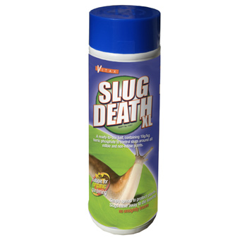
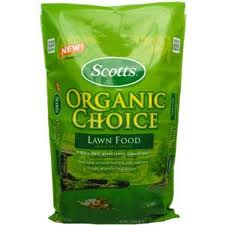

Know Your Onions
 price €4.50  Price €8.50
It is our mission at Know Your Onions is to provide fresh, nutritious, high-quality certified organic produce to our local community. We provide a place for organic gardening workshops; hands-on learning through agricultural related activities, and on-farm research. We are committed to forging partnerships with other farmers and educators, working together to create a more sustainable future for our community. It is our mission further, to impress upon people the dangers of the abuse of artificial fertilisers together with the application of pesticides to our agricultural products to facilitate mass production at the expense of quality.